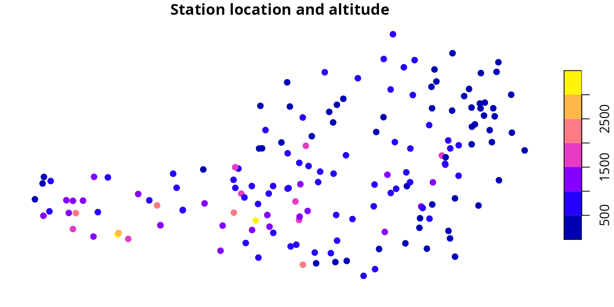
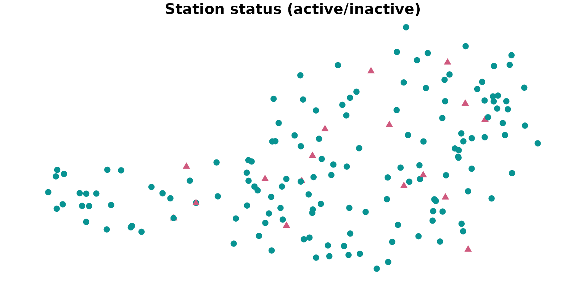

Metadata
Reto Stauffer
metadata.RmdGiven mode and the resource_id are known
(see gs_datasets()) the function gs_metadata()
allows to retrieve meta information which provides which stations and
parameters are available for this specific data set.
library("gsdata")
# Meta information for historical hourly synop observations
meta <- gs_metadata(mode = "historical", resource_id = "synop-v1-1h")The function returns a named list with a series of information about
the data set (e.g., title, frequency,
type, …) alongside with two elements stations
and parameters explained in this article in more
detail.
Station information
Element stations is an object of class c(“sf”,
“data.frame”) containing information about available stations for this
data set. This includes the name of the station, the
geographical location (state, altitude, and
coordinates) as well as the station id which is required
when retrieving data (see gs_stationdata()).
In addition, the object provides information about the time period
data is available (valid_from, valid_to) and
whether or not the station is_active.
plot(meta$station["altitude"],
main = "Station location and altitude",
pch = 19, cex = 1)
plot(meta$station["is_active"],
main = "Station status (active/inactive)",
col = ifelse(meta$station$is_active, "#089392", "#CF597E"),
pch = ifelse(meta$station$is_active, 19, 17),
cex = 1)
Parameter information
Element parameters provides a list of all available
parameters for this data set. Alongside with the name which
is required to retrieve data (see gs_stationdata()) his
data.frame also contains a description as well as the unit
of the measurements. This is, however, only available in German.
head(meta$parameters, n = 3)## name long_name
## 1 C1 Wolkenart der tiefsten Wolkenschicht
## 2 C2 Wolkenart der 2.tiefsten Wolkenschicht
## 3 C3 Wolkenart der 3.tiefsten Wolkenschicht
## desc
## 1 Wolkenart bzw. Gattung der tiefsten Wolkenschicht (Code Table 0500)
## 2 Wolkenart bzw. Gattung der 2.tiefsten Wolkenschicht (Code Table 0500)
## 3 Wolkenart bzw. Gattung der 3.tiefsten Wolkenschicht (Code Table 0500)
## unit
## 1 Code (Synop)
## 2 Code (Synop)
## 3 Code (Synop)Please note that not all stations will provide measurements for all parameters.